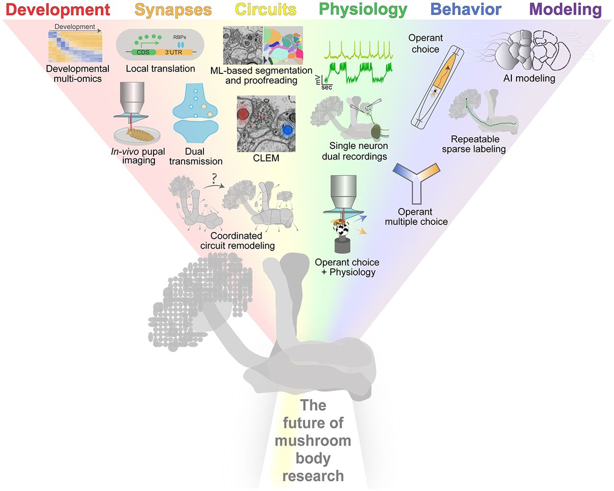
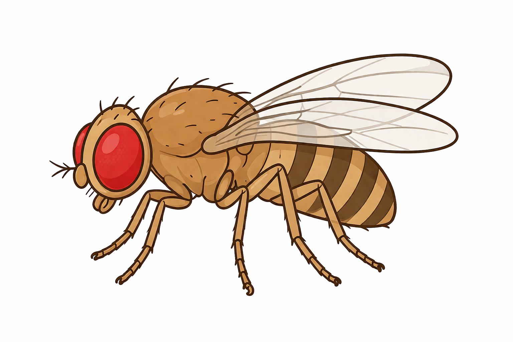
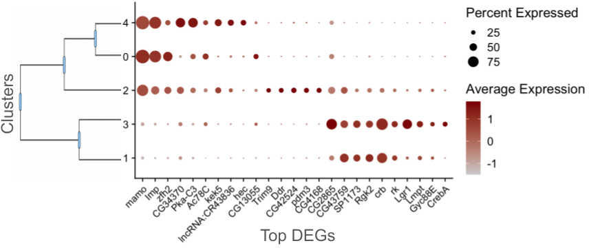

Fly Mushroom Body Atlas
Open-access resource for spatial transcriptomics and multi-omic analysis.

Adapted from Chan et al., 2024, Learning & Memory,
“Future avenues in Drosophila mushroom body research,” Cold Spring Harbor Laboratory Press.

Prezi embedding: Drosophila Concept Map
Drosophila Brain 3D Model
3D UMAP Viewer

3D points in space tester
Bulk and single-cell RNA-seq fly brain marker resources
Loading studies...